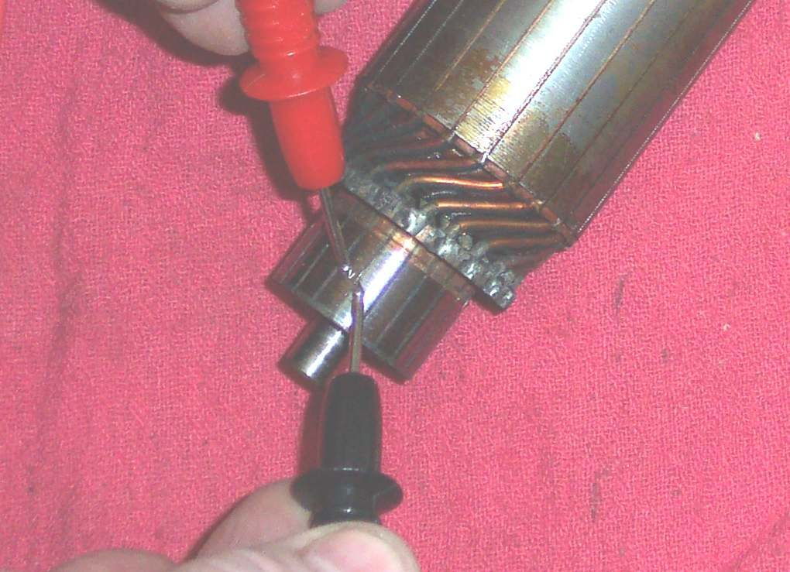
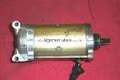
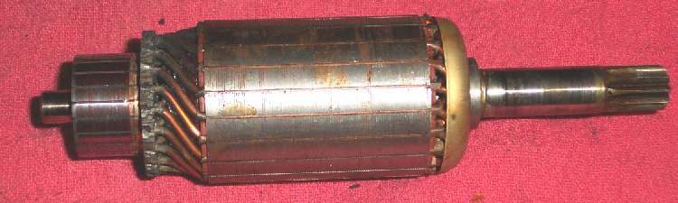
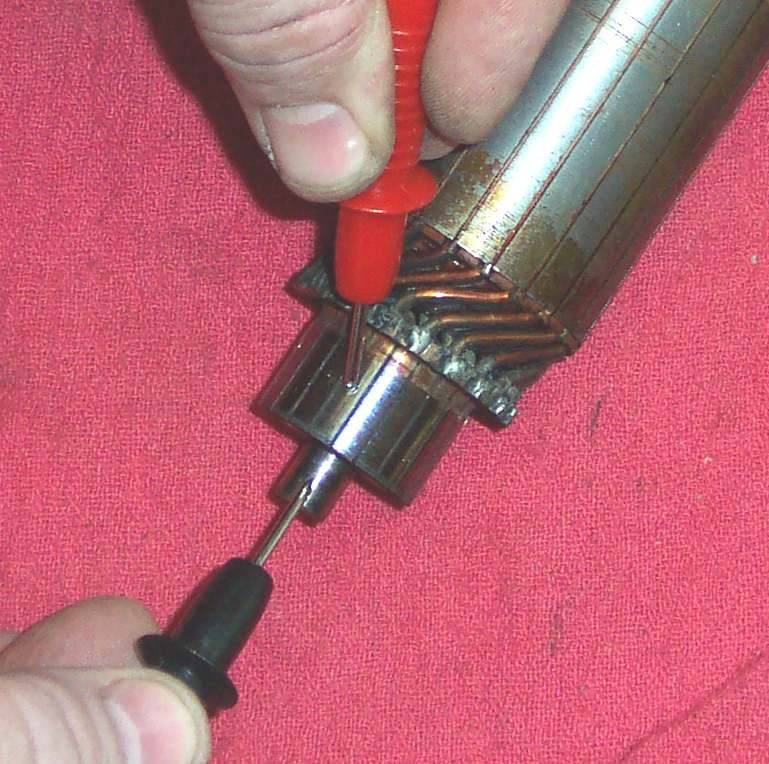
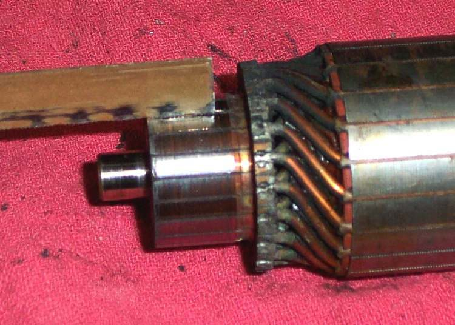
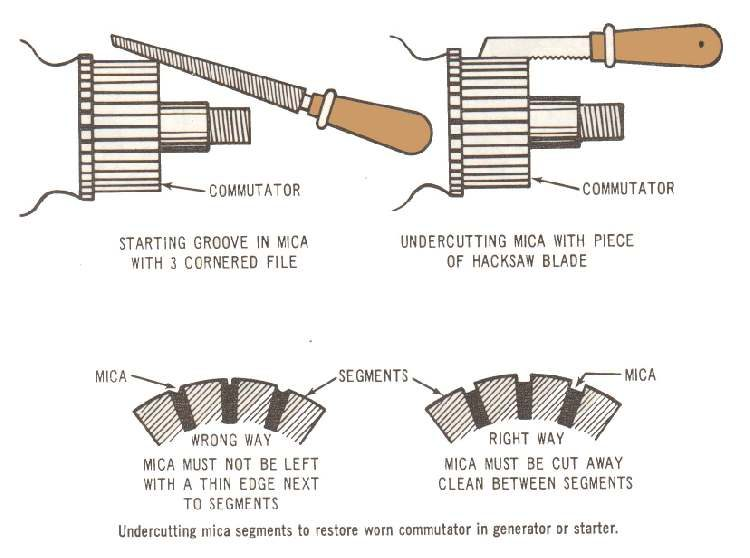

A starter is a strong DC motor. Current goes through carbon brushes onto the commutator (the ring of copper bars on the end of the armature), then through the armature windings. Most starter faults come from the battery, cables, relay or a stuck engine, so check these first. If they are good and the motor still turns weakly or not at all, open it and look inside.
Safety
- Disconnect the battery negative (-) before removing the starter.
- Do not run an unmounted starter for more than a second or two. It spins up very fast.
- On the bike, never crank for more than about 5 to 10 seconds at a time. Rest for about a minute so the windings do not overheat.
- Some starters are driven by a chain. Pulling the motor then drops the chain sprocket into the side cover, so the cover must come off first. Check the manual.
You need
- The manual for brush length limit and tests.
- A marker pen for alignment marks.
Steps
- Test the battery, cables, relay and earth first: Test the starter circuit.
- Remove the starter: Remove and inspect the starter motor.
- Before taking it apart, draw a line across the end covers and body so they go back in the same position. Putting one end back turned 180 degrees stops the motor from working.
- Open the case. Look for oil, water or rust inside. If you find any, clean the parts and fit new seals and O-rings.
- Look for loose or wrongly connected wires, and carbon dust bridging parts.
- Measure the brushes. Compare with the minimum in the manual. If you have no value, a brush that looks short is short.
- Check each brush spring. A weak spring does not press the brush onto the commutator. If you have a spring balance, compare the pull with the manual.
- Look at the commutator. It should be smooth and even. If it is dull or burnt, clean it lightly with fine abrasive paper. Follow your manual on whether emery is allowed.
- Check the gaps between the commutator bars. If the gaps are full of carbon, clean them out with a thin blade.
- Continuity between neighbouring bars: there should be continuity. A high reading on one pair suggests an open winding.
- Continuity between any bar and the armature shaft: there should be none. If there is, the armature is shorted to earth.
- Check the terminal bolt on the side of the starter and the brush that connects to the field coil. There must be continuity. If not, the field coil wire is open.
- Check that the armature is not rubbing the coils inside the body.
- Brushes in a starter with two brushes work harder than in a four-brush starter. Light sparking at the brushes is normal. Heavy sparking needs attention.
- Reassemble with the marks lined up. Fit a new O-ring if fitted. Refit the starter.
Check your work
- Brushes press firmly on a clean commutator.
- The motor turns freely by hand.
- On the bike, the engine cranks briskly.
If it did not fix the problem
- A starter that is worn out, rusted or burnt is usually replaced as a unit. A new set of brushes rarely cures a motor that turns the engine only just.
- Still no crank: Check the starter clutch.
- Check the safety switches: Test the side stand, clutch and neutral switches.